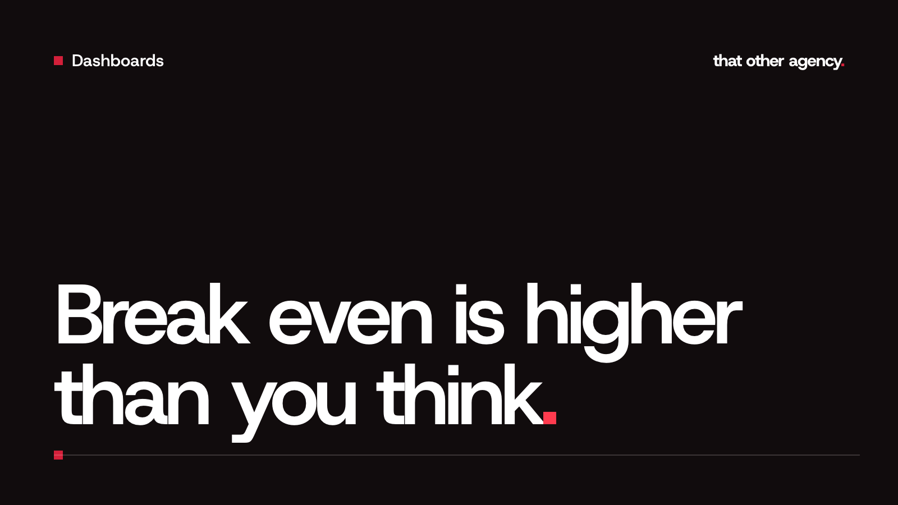

Dashboards
Break even ROAS for a UK Shopify store, with VAT and fees included.

Most break even ROAS calculators ask for one number: your margin. Type in a product margin of 70% and they tell you any ROAS above 1.43 makes money. For a UK Shopify store that answer is usually far too low, because it leaves out VAT, delivery, payment fees and returns. This guide works out a break even ROAS UK brands can actually rely on, line by line, with a made up example in pounds.
The formula
Break even ROAS = 1 ÷ contribution margin
Contribution margin is the share of each pound of sales (excluding VAT) that is left after the costs that come with each order. It is not the same as product margin, which only takes off what the product cost you. At break even, every pound the ads bring in pays for itself and nothing more. Below it, each sale costs you money to make.
ROAS here means revenue divided by ad spend. If you are new to the VAT side of that sum, our post ROAS and VAT explains why revenue should leave VAT out once you are VAT registered.
What goes into contribution margin
List every cost that only happens because an order happened:
- Product cost. What you paid for the goods, including freight to get them to you.
- Packaging. Boxes, mailers, tissue, inserts.
- Pick and pack. Your warehouse or fulfilment partner's charge per order, or a fair figure for your own time if you pack yourself.
- Delivery you pay for. If you offer free delivery, the courier cost is all yours. If customers pay for delivery, count only the gap between what they pay and what the courier charges you.
- Payment fees. Card fees are usually a percentage of the full amount the customer paid, VAT included, plus a small fixed charge on some plans. Check the rate for your plan in Shopify's payment settings.
- Returns. The refunds, return postage and stock you cannot sell again, as a share of sales. Use last year's figure if you have one.
- Apps charged per order. Some subscription, reviews or shipping apps bill per order or as a share of sales. Monthly flat fees are overheads, so leave those out.
Leave out rent, salaries and fixed subscriptions. They matter, but they belong in the target you set above break even, which we come to below.
The break even ROAS UK sum, step by step
Here is a made up order from a VAT registered store selling a standard rated product with free delivery:
- Price the customer pays: £48.00, including VAT at 20%
- Revenue excluding VAT: £48.00 ÷ 1.2 = £40.00
- Product cost: £12.00
- Packaging: £1.00
- Pick and pack: £1.50
- Courier: £3.50
- Payment fees: £1.20, worked out on the full £48
- Returns allowance: 5% of revenue, so £2.00
- Add up the costs. £12.00 + £1.00 + £1.50 + £3.50 + £1.20 + £2.00 = £21.20.
- Take them off revenue. £40.00 − £21.20 = £18.80 left per order.
- Work out the margin. £18.80 ÷ £40.00 = 47%.
- Turn it into break even ROAS. 1 ÷ 0.47 = about 2.13.
Compare that with the calculator answer. Product cost alone gives a margin of 70% (£28 kept from £40), so a break even ROAS of 1.43. A campaign running at 1.8 looks healthy against 1.43. Against 2.13, it loses money on every order.
Matching it to what Ads Manager shows
Your 2.13 is worked out on revenue excluding VAT. The purchase value Meta or Google reports is whatever your store's tracking sends, and for many Shopify stores that is the order total, VAT included. If so, their ROAS runs 20% higher than yours for the same sales.
So before comparing, put both on the same basis. Either take the VAT out of the platform's figure, or multiply your break even by 1.2: 2.13 × 1.2 = about 2.55 in Ads Manager terms. A test order on your own store tells you which basis your tracking uses. If it sends the full amount you paid, VAT is in.
Not VAT registered? Then you charge no VAT, there is nothing to strip out, and the 1.2 step does not apply. Do the sum again on the day you register, because the same price leaves you a sixth less.
Break even is the floor, not the target
At break even the ads pay for themselves and nothing else. Rent, salaries and tools still need paying. Most brands set a target ROAS some way above break even to cover those and leave a profit. How far above depends on your overheads and how much repeat buying you see.
Two more things move the number. A mixed VAT basket (some zero rated or reduced rate products) means dividing by 1.2 is wrong, so use the VAT Shopify recorded on real orders. And discounts lower revenue without lowering costs, so work out a separate break even for sale periods.
What we do on client dashboards
Every custom dashboard we build works out break even ROAS and MER from each brand's own costs, on revenue excluding VAT, and shows the live figure against it every day, so a campaign that only looks profitable gets spotted early. You can click around a working example with made up data in our live dashboard demo. If you want the same for your store, every build starts with a consultation and a fixed quote. For the blended view across every channel, read how to calculate MER on Shopify.
Frequently asked questions
Is break even ROAS the same as break even MER?
The sum is the same: 1 ÷ contribution margin. Break even ROAS is compared with one platform's ROAS, while break even MER is compared with total sales divided by total ad spend across every channel. MER is harder to flatter, so it is the better check on the business as a whole.
Should I aim to break even on the first order?
Not always. Brands with strong repeat buying, such as subscriptions, often accept a loss on the first order because later orders make it back. That only works if you know how many customers really come back, so check it in Shopify before you rely on it.
Does a higher average order value change break even ROAS?
It can. Fixed costs per order, like pick and pack and delivery, take a smaller share of a bigger basket, so contribution margin rises and break even ROAS falls. That is one reason a free delivery threshold is worth testing.